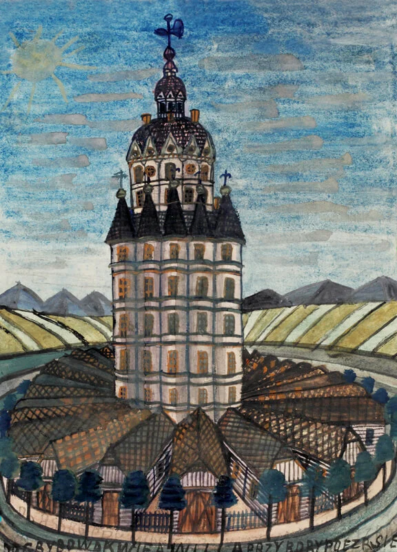

NIKIFOR - Animacja i promocja wystawy w Muzeum Narodowym w Kielcach
Nikifor Lemko, mimo biedy i braku wykształcenia, zachował twórczą wolność,
tworząc niezwykłe obrazy, rysunki i akwarele z prostych materiałów,
takich jak papier, karton czy kredki.
Jego prace do dziś inspirują artystów na całym świecie.

Dla Muzeum Narodowego w Kielcach przygotowałem animowany materiał promujący wystawę Nikifora w oddziale Muzeum Dialogu Kultur. Stworzyłem prostą animację postaci opartą na autoportrecie artysty, wykorzystując elementy jego dzieł oraz plansze przypominające karton. Efekt finalny podkreśla unikatowy charakter twórczości Nikifora i wzmacnia identyfikację wizualną wydarzenia. Film pozwala widzom poznać historię artysty, jego region oraz rozwój jego malarstwa w atrakcyjnej formie.
Zakres prac: 2D, character rigging, motion design, animacja promocyjna, VOX style video.